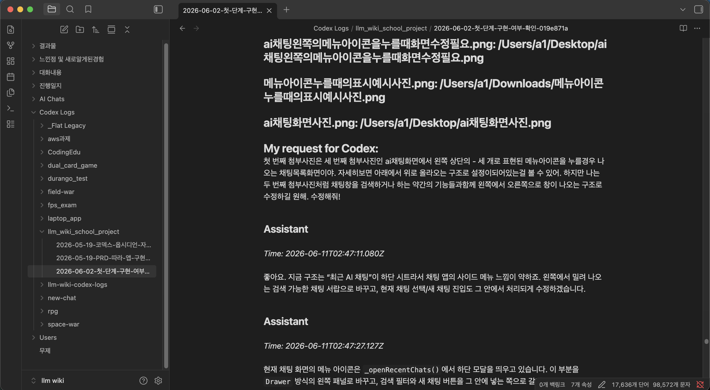
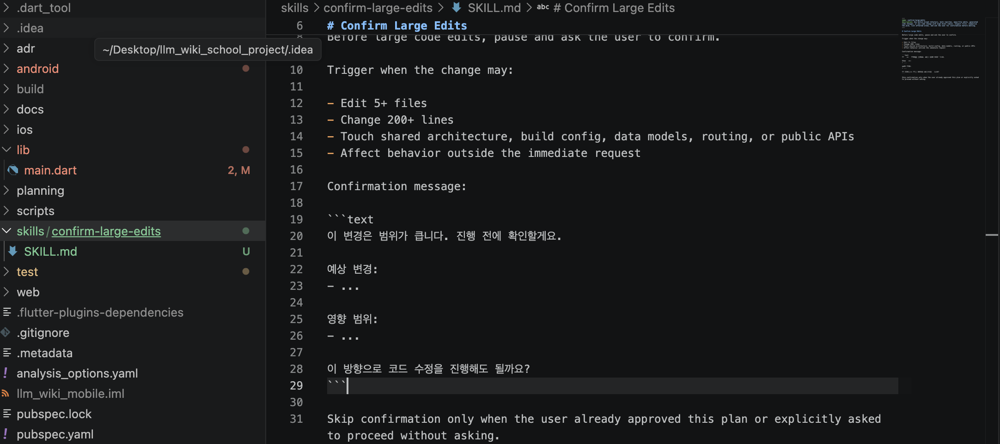

LLM Wiki
AI와 나눈 대화를 프로젝트별로 저장하고, 태그와 검색으로 다시 활용하며, 마크다운으로 내보내는 로컬 우선 지식 관리 앱.
AI 대화는 쌓이지만 지식으로 남지 않는다
사용자는 매일 AI와 문제 해결, 코드 작성, 학습, 기획을 진행한다. 하지만 대부분의 대화는 채팅창에 흩어져 있고, 나중에 다시 찾거나 프로젝트 문서로 재사용하기 어렵다.
이 프로젝트 자체도 LLM Wiki 방식으로 만들었다
LLM Wiki는 단순히 AI 대화를 저장하자는 아이디어에 그치지 않았다. 이 프로젝트를 만드는 과정에서도 Codex와 나눈 작업 대화와 결정 과정을 Obsidian Vault에 저장해, 다시 찾을 수 있는 개발 기록으로 남겼다.
또한 프로젝트 안에 SKILL.md 기반 작업 규칙을 두어 큰 수정이 필요한 순간에는 변경 범위와 영향을 먼저 확인하도록 했다. 즉, AI 대화는 기록으로 남기고, 반복 작업 방식은 스킬 문서로 표준화했다.


현재 앱은 AI 대화를 저장 가능한 지식으로 바꾸는 흐름을 구현했다
AI 채팅은 질문, 응답, 태그를 하나의 지식 단위로 저장한다
사용자가 프로젝트를 선택하고 메시지를 보내면 앱은 민감정보를 먼저 마스킹한 뒤 선택된 Provider에 요청한다. 응답이 오면 사용자 메시지와 AI 답변을 한 대화로 묶고, 제목과 태그를 생성해 로컬에 저장한다.
하나의 앱에서 여러 AI 제공자와 여러 API 키를 관리한다
저장된 대화는 프로젝트별 라이브러리에서 다시 관리된다
라이브러리에서는 전체 대화와 프로젝트별 대화를 검색할 수 있고, 제목, 본문, 태그를 기준으로 원하는 지식을 찾는다. 저장 후에도 대화 제목 변경, 프로젝트 이동, 태그 추가, 삭제와 복원이 가능하다.
지식은 앱 안에 갇히지 않고 마크다운으로 이동한다
보안과 언어 설정은 사용자가 통제하는 방식으로 설계했다
앱은 한국어를 기본 언어로 사용하고, 설정에서 영어와 일본어로 전환할 수 있다. 보안 측면에서는 API 키를 보안 저장소에 분리하고, 대화와 설정은 로컬 스냅샷으로 복원한다. SQLCipher 전환, 앱 잠금, E2EE 동기화는 확장 가능한 구현 경계로 남겨두었다.
현재 작업 범위는 구현 완료 기능과 발표 준비 단계로 재정리했다
LLM Wiki는 AI 사용 기록을 다시 쓰는 지식 체계로 바꾼다
발표에서는 문제 정의와 기술 결정으로 시작해, 실제 구현된 AI 채팅 저장 흐름, Provider/API 키 관리, 라이브러리, 내보내기, 보안 구조를 설명한다. 마지막에는 실제 앱 시연 영상으로 전체 사용자 경험을 보여준다.